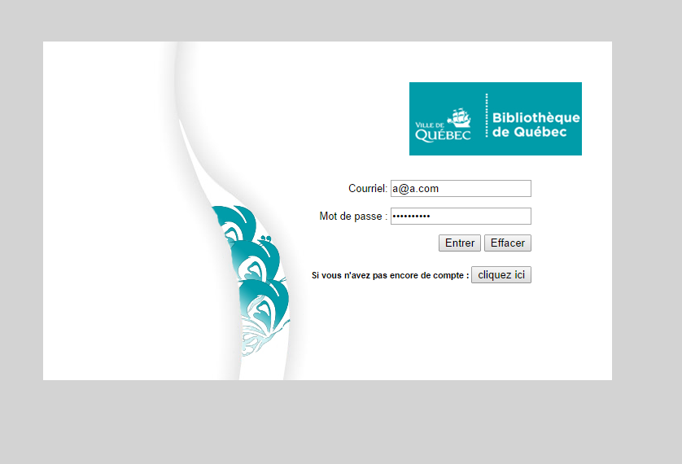

L'application de gestion des bibliothèques de la ville de Québec est notre choix de projet final du cours SIO-6014 du langage Dart.
L'idée est de créer un SIGB à base du langage Dart, ce qui nous permettra d'explorer et de mettre en application toutes les techniques apprises tout au long du cours Dart.
Ainsi notre application couvre :
- La création de models en utilisant : Model Concepts et Dartling.
- La manipulation du DOM, du HTML5 pour créer une application web complexe.
- L'utilisation de framework pour enrichir l'interface utilisateur comme Polymer et Paper elements.
- enregistrer les données manipulées dans une base de données locale (IndexedDB).
Nous avons créé :
- Le models concepts de notre application composés des concepts : - Bibliotheques, Usagers, Ouvrages, Type Ouvrage, Exemplaire.
- une Maquette de l'application avec Polymer, Paper elements.
- Un système d'authentification pour se connecter à l'application.
- l'importation des données opérationnelle.
- Les maquettes d'ajout des données opérationnelle mais l'enregistrement dans la base comporte encore certains bug.
- Le menu Aide operationnel.
- Menu usager qui n'est pas encore opérationnel dont :
* Recherche.
* Réservation.
* Profil utilisateur.
Première étape : Puisque la base ne contient aucun usager lors du premier demarrage, un formulaire pour créer un usager est proposé lors de la première connexion.
L'étape suivant est L'authentification à l'aide de l'usager créé ::

Prochaine étape nous mène à la page d'accueil de l'application :
À droite de l'application, s'affiche l'identification de l'usager connecté et un bouton pour se deconnecter.
À gauche, nous avons le logo et le menu de l'application.
Pour l'utilisation normal de l'application, nous devons faire une importation des données que nous utiliserons dans notre système et qui auraient pu exister dans le système précédent,

Nous pourrons ainsi importer la liste des Bibliothèques, d'ouvrages, de types d'ouvrages et d'usager aussi.
les fichiers à utiliser pour l'importation respectant le format JSON de l'application se trouvent dans le dossier WEB / IMPORT à la racine du projet.
1- Importation des bibliothèques :
Au clique du bouton choisissez un fichier, on peut choisir le fichier bibliotheques,json (notre fichier doit nécessairement se nommer ainsi).
une fois le fichier choisi, un cercle tournant le temps d'importation s'affiche et une barre de progression se remplie progressivement.
À la fin de l'importation, un message s'affiche informant du nombre d'enregistrement importés puis nous affiche la liste des données importées dans le tableau en dessous.
De la même façon nous pouvons importer les trois autres types de données.
Nous pouvons vérifier le résultat dans IndexedDB :
Pour Ajouter unitairement des données, nous pourrons le faire à travers le menu Ajout :
Menu A propos :
Compte tenu du temps qui nous est alloué, nous n'avons pas pu réaliser toutes les fonctionnalités que nous envisagions. Nous avons préféré préparer toute la partie non visible de notre application que nous pourrons par la suite interroger et presenter.
Plusieurs idées d'évolution ont aussi émerger au cours de développement comme :
- Ajout de cryptage pour sécuriser le mot de passe utilisateur.
- Ajout de la notion de Profil de sécurité utilisateur pour afficher ou masquer le menu administrateur selon l'usager connecté.
- Recherche en texte integral.
- ...